자재창고 · 생산실행 · 품질관리 · 제품출하 · 설비툴 · 기준정보연계 — 6개 도메인 업무 흐름 협의안
각 도메인 = 메인 구조도(정상 주 흐름) + 사이드 구조도(복잡 예외 분리). 확정 근거가 있는 요소만 그리고, 미확정 지점은 빨간 미정의 마커로 노출해 협의 대상을 명시한다.
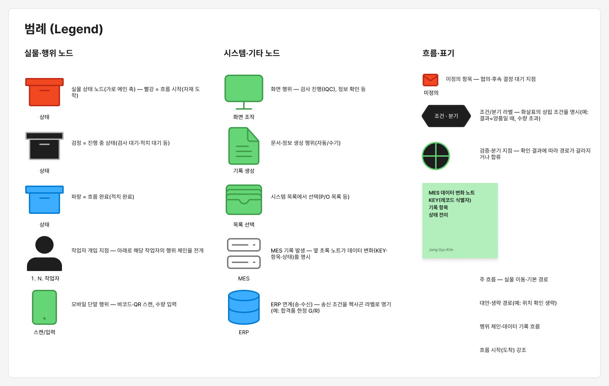
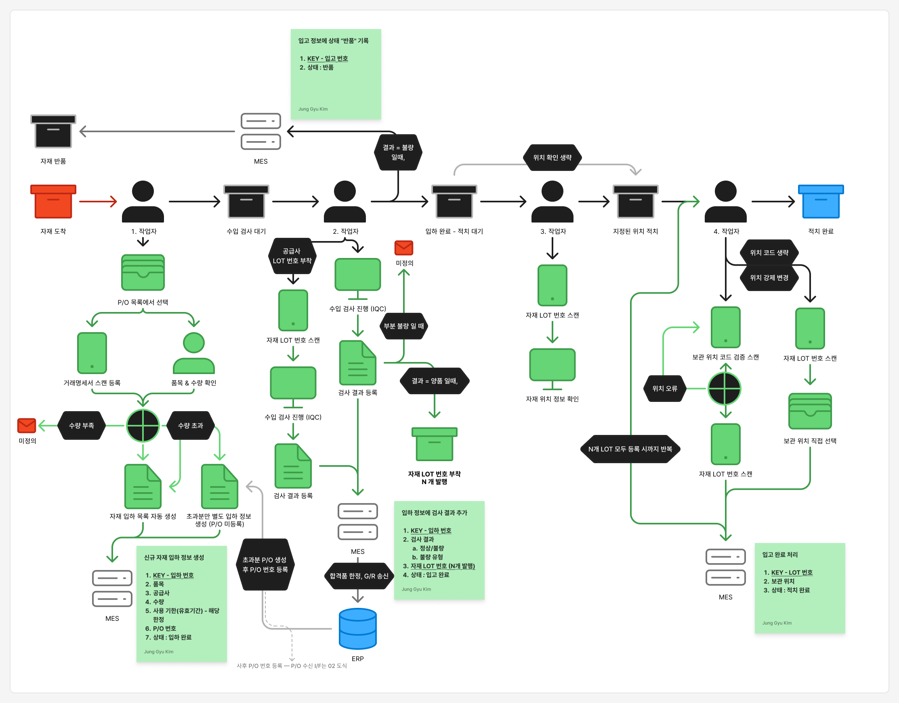
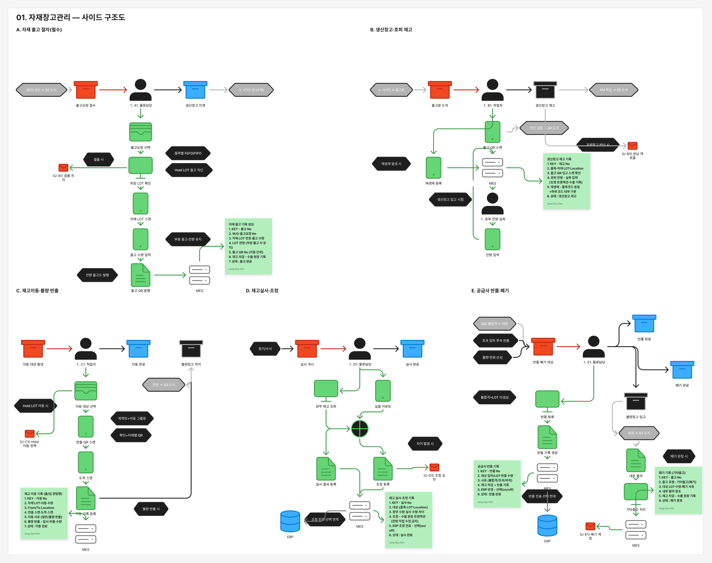
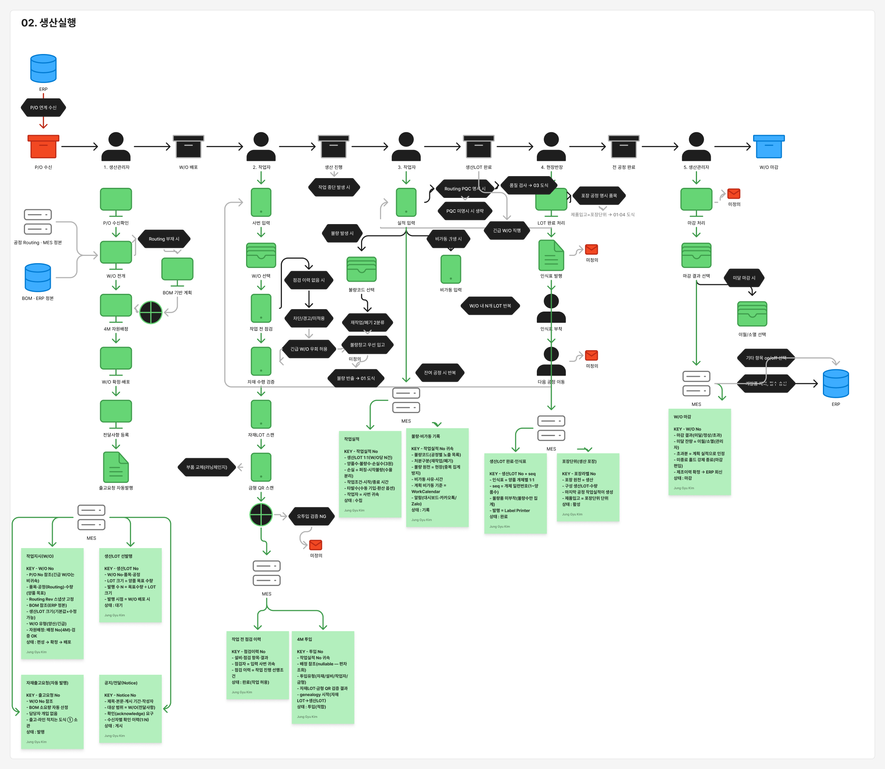
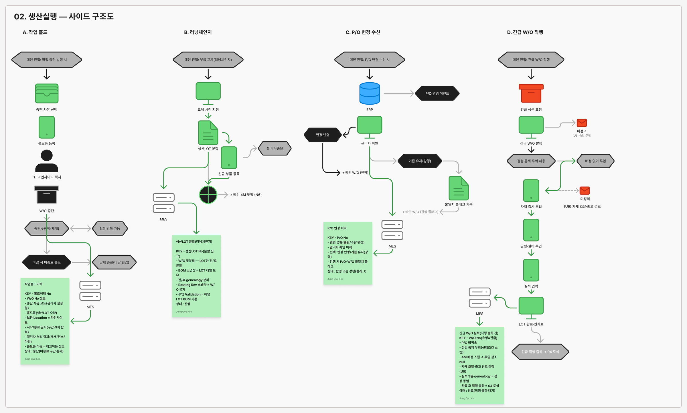
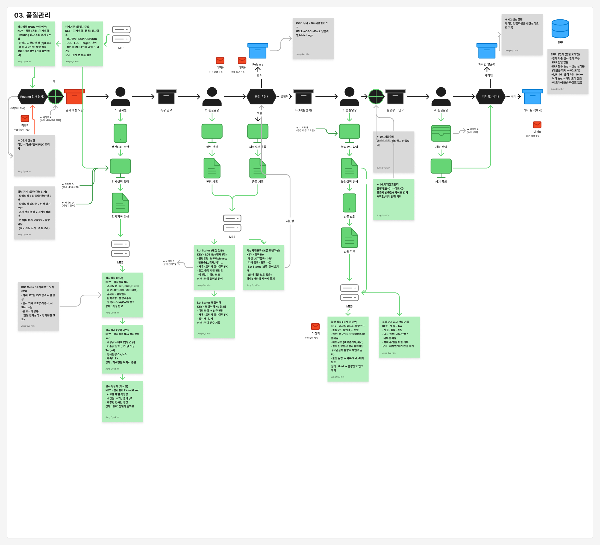
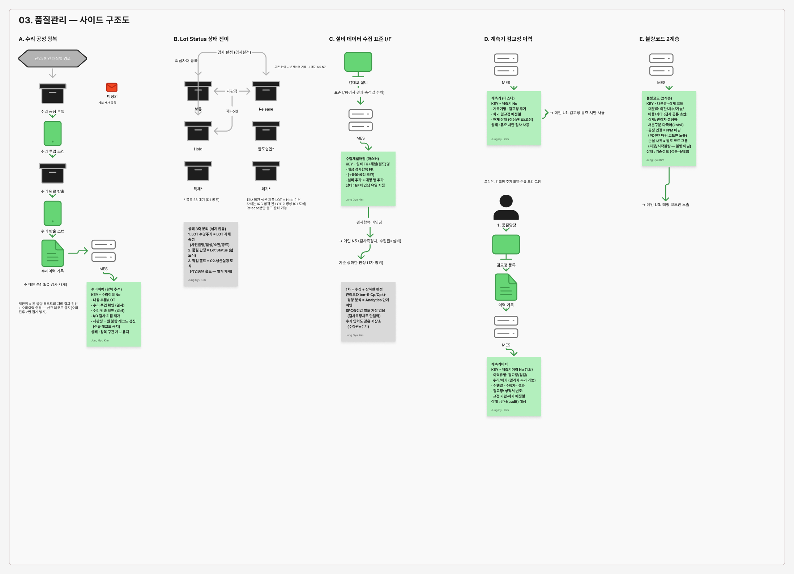
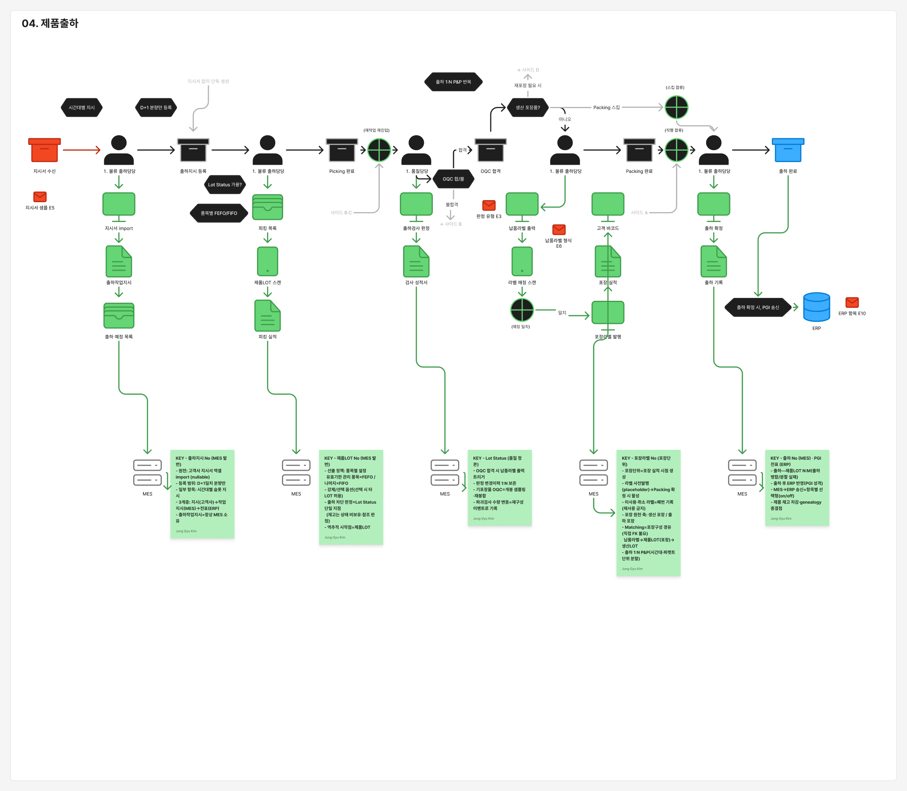
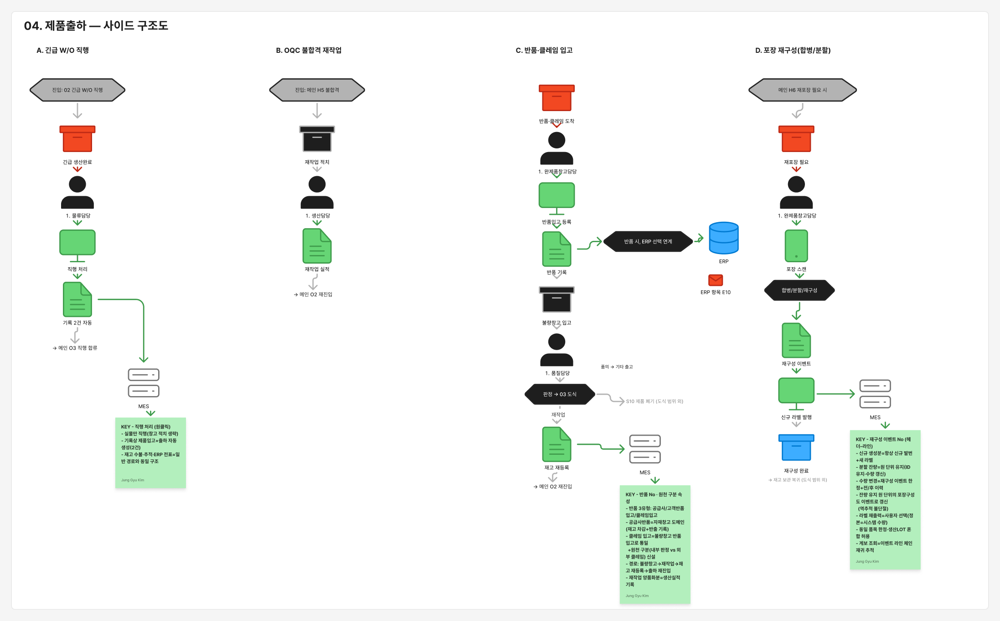
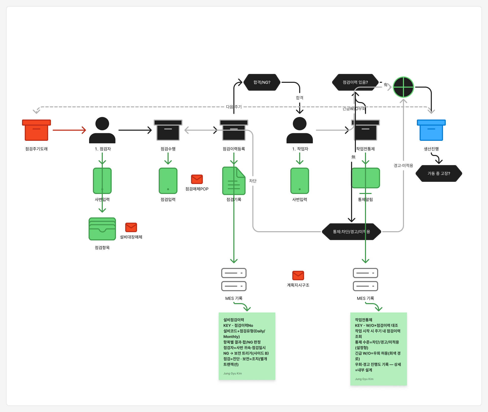
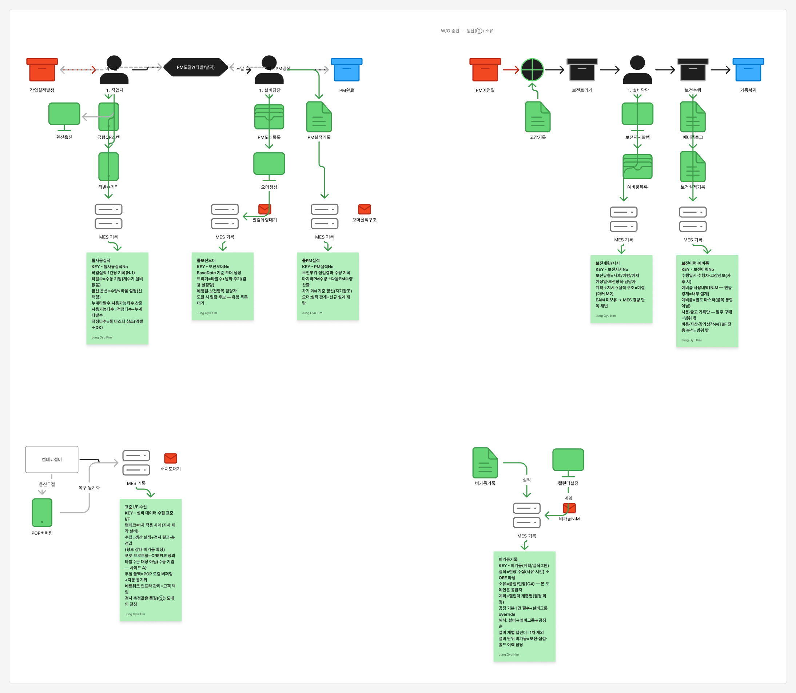
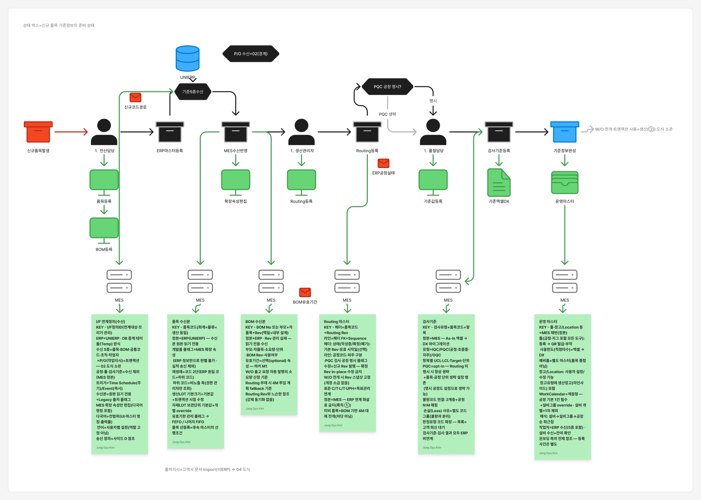
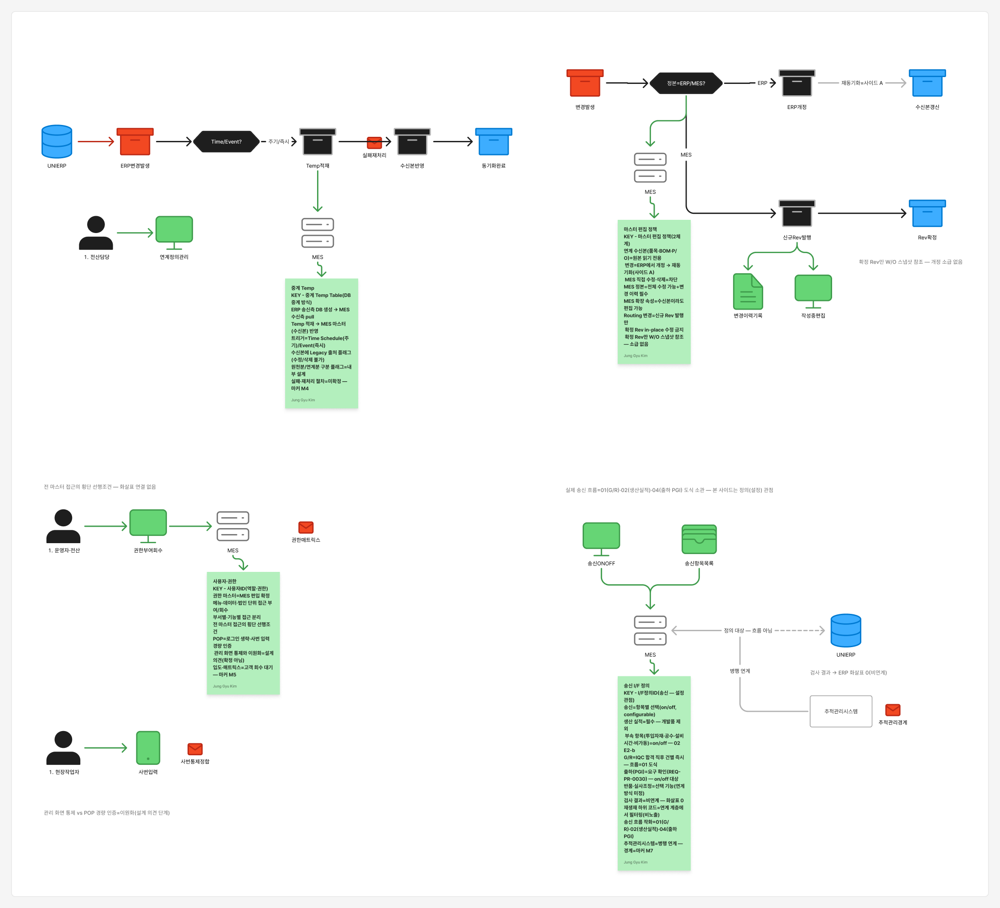
각 항목은 도식 위 마커 위치에서 맥락과 함께 확인할 수 있다 — 협의에서 확정되는 즉시 도식·스펙에 반영한다.
현행은 스캔·라벨 인프라 부재(엑셀·종이·수기) — 단, OA사업부는 추적관리시스템 장비 일부를 재사용한다.
| 조합 | 구성 | 용도 | 예상 가격 (1식) |
|---|---|---|---|
| 조합 1 | B 라벨 프린터 + C 근거리 스캐너 + D PC·모니터 | 생산 실적 입력 + 라벨 출력 스테이션 | 136만원 (36+50+50) |
| 조합 2 | C 근거리 스캐너 + D PC·모니터 | 생산 계획 확인 · 자재 투입 스캔 · 생산 일지 등 스캔/입력 전용 | 100만원 (50+50) |
| 조합 3 | B 라벨 프린터 + D PC·모니터 | 라벨 출력 전용 — 스캔이 타 지점 소관인 발행 거점(조립 최종 실적 · IQC 검사대) | 86만원 (36+50) |
예상가는 내부 개산 기준 — 정식 견적 접수 후 재산정한다.
| 구역 | 용도 | 구성 |
|---|---|---|
| 사출공정 | 생산 계획 확인 · 자재 투입 스캔 · 생산 실적·LOT 발행 | 조합 1 |
| 조립공정 | 생산 계획 확인 · 자재 투입 스캔 | 조합 2 |
| 세부 공정 생산 일지 기록(공정별 투입 스캔) | 조합 2 | |
| 최종 생산 실적 · LOT 발행 — 스캔은 투입 구간 소관 | 조합 3 | |
| 자재 창고 | 입하 정보 등록 · 자재 적치 | A |
| 자재 LOT 라벨 · 출고 QR 출력 | 조합 1 | |
| 생산 창고 | 입고/출고 확인 | A |
| 제품 창고 | 입고/출고 확인 | A |
| 출하 포장 라인 | 입고 확인 | A |
| 제품 LOT 라벨 출력 | 조합 1 |
| 구역 | 용도 | 구성 |
|---|---|---|
| 생산 라인 ✱ | I/O 공정(수리 재투입 검사 포함) | 조합 2 |
| 생산 계획 · 자재 투입 확인 | 조합 2 | |
| 자재 창고 | 입하 정보 등록 · 자재 적치(초과분 별도 입하 포함) | A |
| 자재 LOT 라벨 · 출고 QR 출력 | 조합 1 | |
| 생산 창고 | 입고 확인(사내 이동 출/입 전수 기록) | A |
| 제품 창고 | 입고/출고 확인 | A |
| 출하 포장 라인 ✱ | 입고 확인 | A |
| 제품 LOT 라벨 출력(납품라벨 Matching 포함) | 조합 1 |
✱ 재사용 장비의 정확한 범위(모델·수량·상태)는 실사 후 확정 — 신규 구매 수량에서 차감.
| 지점 · 용도 | 구성 | 수량 |
|---|---|---|
| 사출공정 — 실적 입력·인식표 발행 + 투입 스캔작업자 1인 1식 (사출기 80대 / 10명) | 조합 1 | 10 |
| 조립공정 — 세부 공정 투입 스캔·생산 일지[가설] 스캔 지점 3 × 라인 2 | 조합 2 | 6 |
| 조립공정 — 최종 실적·인식표 발행스캔은 투입 구간(조합 2) 소관 | 조합 3 | 1 |
| 자재 창고 — 입하 등록·적치 | A | 1 |
| 자재 창고 — LOT 라벨·출고 QR 발행출고 QR 전 자재LOT 스캔 선행 — 스캐너 필수 | 조합 1 | 1 |
| IQC 검사대 — 판정 입력·라벨 발행[가설] 자재창고와 분리 배치 시 | 조합 3 | 1 |
| 생산 창고 — 입고/출고 확인 | A | 1 |
| 제품 창고 — 입고/출고 확인 | A | 1 |
| 출하 포장 — 입고 확인 | A | 1 |
| 출하 포장 — 라벨 출력·Matching 스캔 | 조합 1 | 1 |
| 불량 창고 — 입고·반출 기록 | A | 1 |
| 설비 점검·보전 — 순회 입력 [가설] | A | 1 |
| 소계 | A 6 · 조합 1 12 · 조합 2 6 · 조합 3 2 | |
| 지점 · 용도 | 구성 | 수량 |
|---|---|---|
| 생산 라인 — 자재 투입 + 생산 실적라인 6개 × (투입 1 + 실적 1) | 조합 2 | 12 |
| 생산 라인 — I/O 공정 | ✱ 재사용 | — |
| 자재 창고 — 입하 등록·적치초과분 별도 입하 분리 포함 | A | 1 |
| 자재 창고 — LOT 라벨·출고 QR 발행 | 조합 1 | 1 |
| 생산 창고 (3층 엘리베이터 앞) — 입고 확인 | A | 1 |
| 제품 창고 — 입고/출고 확인 | A | 1 |
| 출하 포장 — 입고 확인 | ✱ 재사용 | — |
| 출하 포장 — 라벨 출력·Matching 스캔 | 조합 1 | 1 |
| 불량 창고 — 입고·반출 기록 | A | 1 |
| 소계 (신규 구매) | A 4 · 조합 1 2 · 조합 2 12 | |
✱ 재사용 = 추적관리시스템 보유 장비 — 실사(모델·수량·상태) 후 확정, 불가 판정 시 신규 전환.
| 구분 | 수량 | 단가 (개산) | 금액 |
|---|---|---|---|
| A 이동형 스캐너 모듈 | 10 | 70만원 (가정) | 700만원 |
| 조합 1 — 프린터+스캐너+PC | 14 | 136만원 | 1,904만원 |
| 조합 2 — 스캐너+PC | 18 | 100만원 | 1,800만원 |
| 조합 3 — 프린터+PC | 2 | 86만원 | 172만원 |
| 합계 (신규 구매) | 44식 | 4,576만원 |
6개 도메인 도식은 확정 근거만으로 그려져 있고, 도메인 간 흐름은 전수 정합 점검을 마쳤다.
남은 것은 39건의 미정의 항목 — 협의에서 확정되는 대로 도식·명세에 즉시 반영한다.